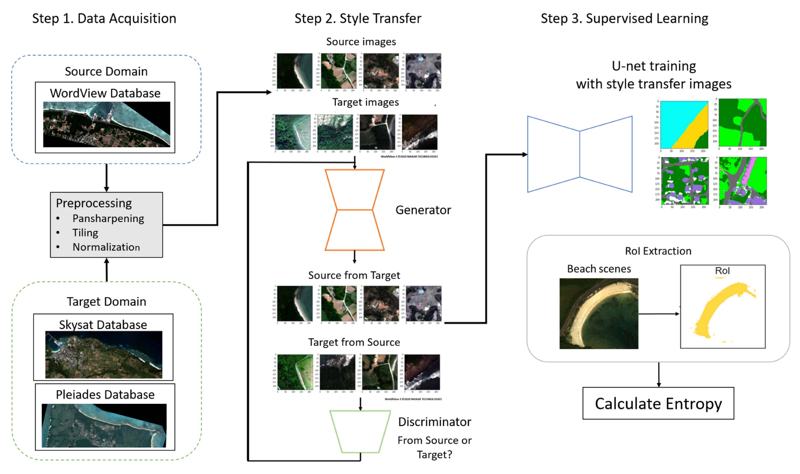

I am a DAAD funded PhD student at the University of Hamburg, Hamburg Observatory, working with Dr. Jan-Torge Schindler from 2025. My main research goal is to understand the formation and evolution of galaxies and supermassive black holes in the early Universe at z > 6 (within the first billion years after the Big Bang). Specifically, I am currently working on searches for high-redshift quasars with the Euclid space telescope, primarily using statistical and deep learning methods.
In 2017 and 2019, I received B.S. and M.S. degrees in the field of High Energy Physics from Science Tokyo (formerly Tokyo Institute of Technology), under the supervision of Prof. Dr. M. Kuze. My research focused on the detection of rare particles, such as the Higgs boson and BSM particles, from the Large Hadron Collider experiment at CERN.
After graduating from Science Tokyo, from 2020 to 2025, I worked at Japanese startups as a data science researcher, primarily on remote sensing data. My aspiration to return to academia, together with my strong interest in the Universe, brought me to Germany.
I enjoy shogi, anime, manga, and traveling. I am currently enjoying exploring cities across Germany and other European countries.
I am currently working on discovery of high-redshift quasars, rapidly accreting supermassive black holes. Upcoming and ongoing large-scale surveys such as Euclid, Nancy Grace Roman Space Telescope, and the Vera C. Rubin Observatory will produce enormous volumes of data, and my research especially focuses on identifying rare sources using deep learning-based anomaly detection. My previous experience in satellite image analysis and high-energy particle-collision data analysis helps me explore large-scale scientific datasets.
High-Redshift Quasar Survey
PhD research
Distant quasars are important for understanding the growth of supermassive black holes and their host galaxies in the early Universe. The Euclid space telescope has already discovered tens of new quasars, primarily using supervised machine learning methods. However, these approaches may miss unusual types of quasars because the training data are biased toward Type I quasars. I am developing self-supervised machine learning approaches for more comprehensive quasar discovery.
Satellite remote sensing is observing the Earth surface from satellites by measuring electromagnetic radiation. Today, a large number of Earth-observing satellites are in orbit, enabling near-real-time monitoring of our planet. As a data scientist, I worked on several projects, including environmental monitoring and natural-disaster assessment. My research focused on reducing domain gaps between different satellite sensors and on multi-wavelength data fusion, combining optical and near-infrared observations with radio-wave data.
Standard Model is a well-established theory that describes elementary particles and their interactions. However, it cannot explain several observed phenomena, suggesting that new particles may exist beyond the Standard Model (BSM). At CERN, the Large Hadron Collider searches for such new physics by colliding protons at high energies (TeV scale) and analyzing enormous amounts of collision data. During my master’s degree, I worked on searches for BSM particles using simulation data and machine learning methods, including decision-tree-based models and recurrent neural networks.
Coastal marine debris poses a serious environmental threat, and hence it is important to monitor its accumulation regularly. However, manual beach surveys are labor-intensive and too spatially sparse to support large-scale monitoring. As a scalable alternative, we developed a marine debris monitoring system using very high-resolution satellite imagery paired with in-situ clean-up records from the Japanese coastline.
To automatically extract beach areas, we trained a U-Net segmentation model to classify each pixel into nine classes: vegetation, trees, buildings, man-made structures, roads, water, sand, rocks, and others. We then found that Shannon entropy computed from the multispectral reflectance within each segment was a strong indicator of debris presence. A classifier based on this feature achieved approximately 88% accuracy and showed strong correlation with ground-based clean-up volumes, demonstrating the potential of entropy as a scalable method estimating for marine debris density.
This entropy-based method was originally developed for very high-resolution WorldView imagery, whose low revisit frequency limits the temporal resolution of coastal monitoring. To extend the approach to satellite sensors with more frequent revisit times but lower spatial resolution, we developed a CycleGAN-based unsupervised domain adaptation framework that translates imagery from these sensors into the radiometric domain of the WorldView data, without requiring additional labeled samples. The adapted pipeline was successfully applied to a different coastal region, where it reproduced the same entropy-based response to marine debris and enabled substantially more frequent monitoring, increasing the achievable observation cadence from approximately monthly to weekly or even daily.

Domain-adaptation pipeline: sensor-domain style transfer (CycleGAN) feeding a U-Net segmentation model, followed by RoI extraction and entropy calculation on beach scenes.
K. Sasaki, T. Sekine, L.-J. Burtz, and W. J. Emery, “Coastal Marine Debris Detection and Density Mapping With Very High Resolution Satellite Imagery,” IEEE JSTARS, vol. 15, pp. 6391–6401, 2022.
K. Sasaki, T. Sekine, and W. J. Emery, “Enhancing the Detection of Coastal Marine Debris in Very High-Resolution Satellite Imagery via Unsupervised Domain Adaptation,” IEEE JSTARS, vol. 17, pp. 6014–6028, 2024.
T. Sekine and K. Sasaki, “Detection of harmful algal blooms in the Gulf of Mexico from Satellogic hyperspectral satellite imagery.” International Astronautical Congress 2023, Baku, Azerbaijan.
T. Sekine and K. Sasaki, “Detection of the collapsed buildings in Turkey from multi-sensor very high resolution satellite images.” International Astronautical Congress 2023, Baku, Azerbaijan.
K. Sasaki, T. Sekine, and W. Emery, “Large Scale Coastal Marine Debris Monitoring in the Coast of Japan islands using Satellite and Drone observations.” International Astronautical Congress 2022, Paris, France, 2022, IAC-22B1.IP.x73154.
K. Sasaki, L.-J. Burtz, T. Sekine, and M. Yoshioka, “Time Series Monitoring of the 2020 Mauritius Oil Spill with Synthetic Aperture Radar Satellite Imagery.” International Astronautical Congress 2021, Dubai, United Arab Emirates, 2021, IAC-21-B1.4.1.